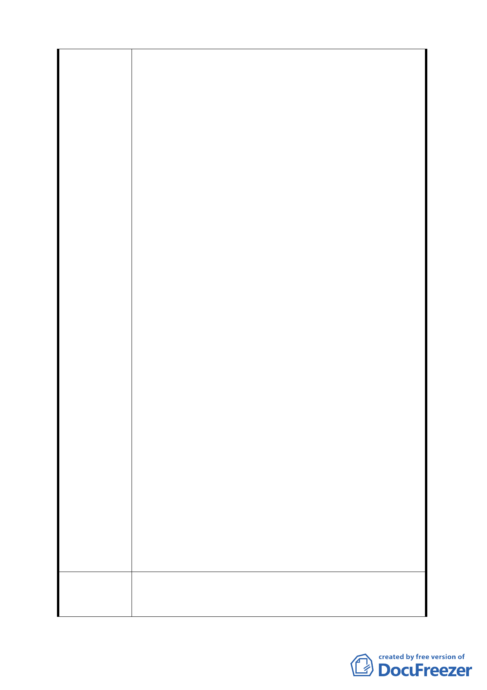

經貿潮流的內湖科技園區，創造足以媲美國際之市
街，提昇本市產業競爭力，甚為感激！綜觀本次計畫
案內五期重劃區之倉儲專區已變更為辦公服務區，且
取消倉儲使用應達申請面積百分之五十以上之限
制，其立意極佳並可促進區域開發繁榮。惟對於大彎
南段工業區（供倉儲使用）之放寬，在未取消『其供
第三十八組倉儲業使用之容積樓地板面積，應達申請
基地總容積樓地板面積之二分之ㄧ以上』之限制時，
俟無實質放寬之作用，無法達本計畫案變更之目的，
誠屬可惜。
二、 依本計畫案內第十三頁發展議題所述：【本計畫書大
彎南段工業區（供倉儲使用），部分倉儲批發業者變
相經營大型賣場，致原規劃倉儲物流功能模糊化】。
可見於原都市計畫對於本區倉儲區之規劃根本不符
產業變化及需求甚且造成極大之交通衝擊，為此本計
劃理應勿再囿於原都市計畫土地使用分區之不宜，而
應遵循原『內湖輕工業變更為符合世界經貿潮流的內
湖科學園區』成功之模式予以大格局調整。
三、 由基隆河案之河濱公園遠眺大彎南北段，就其開發速
度及建物外觀型式而言，顯而易見大彎南段之開發已
大幅落後大灣北段，而南段工業區（供倉儲使用）之
建物，亦與所謂的「科技園區」極不相稱，設若日後
倉儲業經營者為降低建物成本，而不願以成本較高較
宜搭配高科技產業大樓之外觀型式興建，而以較低廉
建材興建倉儲時，對於整個大內科都市景觀全貌，定
會有極大衝擊。可見本倉儲區之存在對於所謂的「台
北產業軸帶計畫」之推行確有其美中不足之處，值得
深思。又大彎南段工業區（供倉儲使用），其開發率
僅約百分之四十，且部分之大型賣場係為租地使用。
日後亦可能移至他處經營。需知都市景觀之良窳可視
為已開發國家之高低水平指標，為此在政府積極實施
都市更新計畫的同時本計畫當以高瞻遠矚之視野未
雨綢繆，並跳脫原規劃不宜之桎梏，而比照五期重劃
區之倉儲專區全面開放為辦公室專區使用，以避免影
響本區之長遠發展。
大彎南段工業區（供倉儲使用）比照五期重劃區原倉儲專
建 議 辦 法 區變更為半功服務專區，或取消『其供第三十八組倉儲業
使用之容積樓地板面積，應達申請基地總容積樓地板面積
10